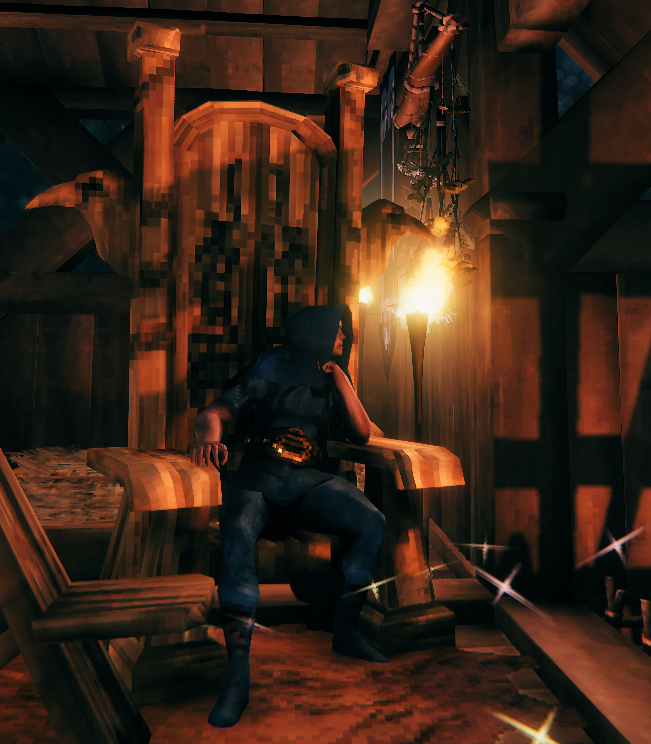
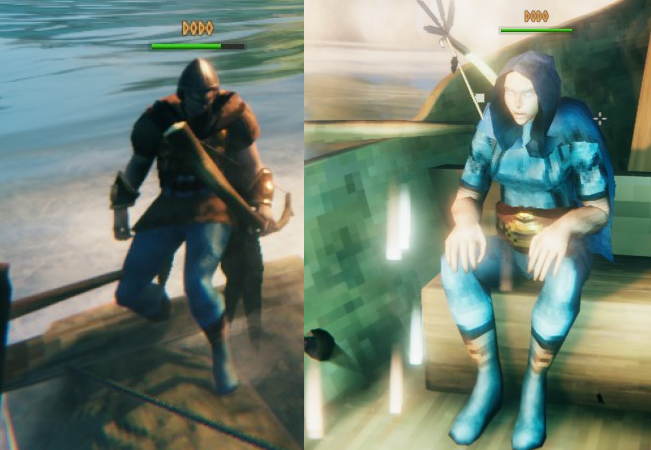

DODO

발헤임의 플레이어블 캐릭터 중 하나. 플레이어는 도도. 주 무기는 철퇴와 원형 방패.
탐험과 전투, 요리의 비중이 높은 멀티형 플레이어. 혼자만 스샷이 긴 이유는 까마귀 왕좌를 다 보여주는게 간지나 보여서.
팀의 탱커로서 미지의 지역과 보스 공략에 있어선 빠질 수 없는 인물이다.
하지만 엘더 공략 당시 20번 사망이라는 기록적인 횟수를 세우기도 했다.

진면목은 바로 항해술. 바람을 읽는 실력이 뛰어나다.
허접 뗏목때부터 자의 반 타의 반으로 꾸준히 항해술을 익혔기 때문일까, 배가 커진 지금 일등 항해사로서의 몫을 톡톡히 하고 있다.